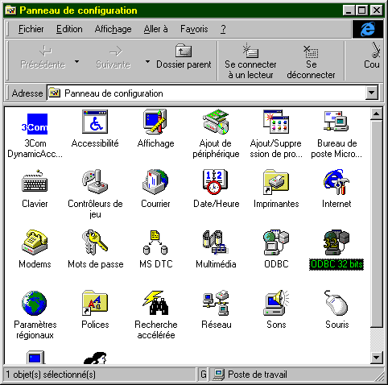
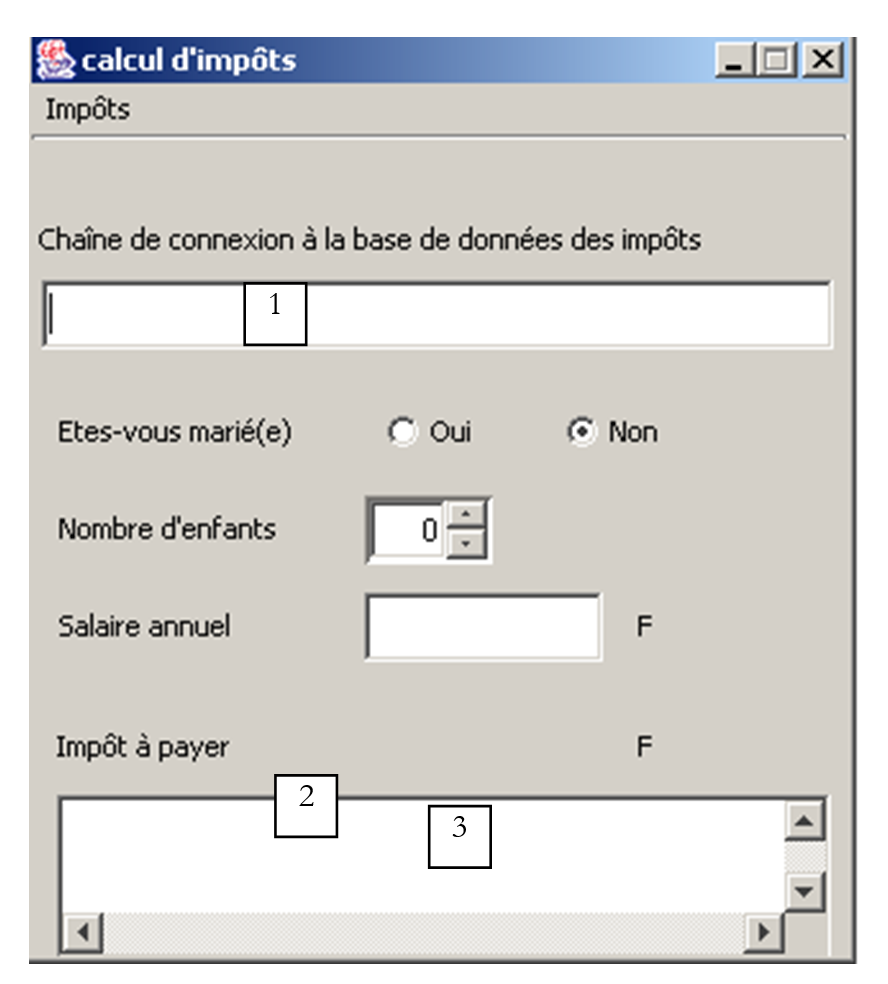
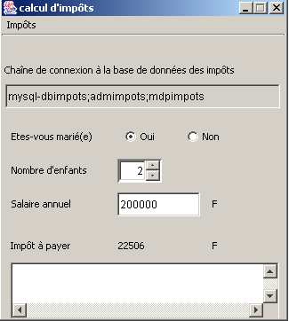
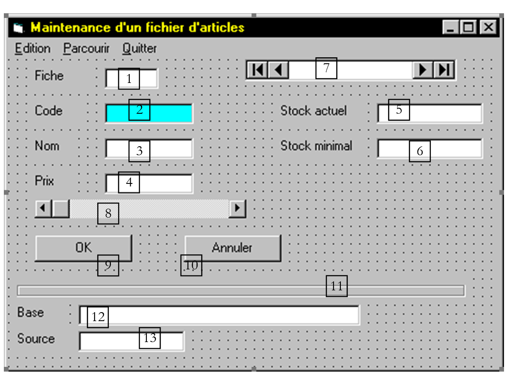

6. Database management with API JDBC
6.1. Overview
There are many databases on the market. To standardize database access under Windows, Microsoft has developed an interface called ODC (Open Database Connectivity). This layer hides the specific features of each database behind a standard interface. There are many MS drivers available for Windows that facilitate access to databases. Here, for example, is a list of ODBC drivers installed on a Win95 machine:

An application relying on these drivers can use any of the above databases without rewriting.

To enable Java applications to also take advantage of the ODBC interface, Sun has created the JDBC interface (Java DataBase Connectivity), which will act as an intermediary between the Java application and the ODBC interface:

6.2. Key steps in database operations
6.2.1. Introduction
In a JAVA application using a database with the JDBC interface, the following steps are generally involved:
- Connecting to the database
- Sending SQL queries to the database
- Receiving and processing the results of these queries
- Closing the connection
Steps 2 and 3 are performed repeatedly; the connection is closed only at the end of database operations. This is a relatively standard pattern that you may be familiar with if you have worked with a database interactively. We will detail each of these steps using an example. Consider a database named ACCESS, referred to as ARTICLES, with the following structure:
name | type |
code | 4-character item code |
name | its name (string) |
price | its price (actual) |
stock_actu | current stock (integer) |
stock_mini | the minimum stock (integer) below which the item must be restocked |
This database ACCESS is defined as a "user" data source in the ODBC database manager:


Its characteristics are specified using the Configure button as follows:

This configuration essentially consists of associating the ARTICLES database with the Access file articles.mdb corresponding to this database. Once this is done, the ARTICLES database is accessible to applications using the ODBC interface.
6.2.2. The connection step
To use a database, a Java application must first go through a connection phase. This is done using the following class method:
where
DriverManager: Java class containing the list of drivers available to the application
Connection: Java class establishing a link between the application and the database, through which the application will send SQL queries to the database and receive results
URL: name identifying the database. This name is analogous to URL on the Internet. This is why it is part of the URL class. However, the Internet plays no role here. The URL has the following form:
**jdbc:nom\_du\_pilote:nom\_de\_la\_source;param=val1;param2=val2**
In our examples, where we will use only ODBC drivers, the driver is called **odbc**. The third part of the URL consists of the source name with any parameters. In our examples, these will be ODBC sources known to the system. Thus, the URL for the *Articles* data source defined previously will be
**jdbc:odbc:Articles**
id: User ID (login)
mdp: user password
In summary, the program connects to a database:
- identified by a name (URL)
- under a user ID (id, mdp)
If these three parameters are correct, and if the driver capable of establishing the connection between the Java application and the specified database exists, then a connection is established between the Java application and the database. This connection is represented for the program by the Connection object returned by the DriverManager class. Since this connection may fail for various reasons, it may throw an exception. We will therefore write:
Connection connexion=null;
URL base=...;
String id=...;
String mdp=...;
try{
connexion=DriverManager.getConnection(base,id,mdp);
} catch (Exception e){
// handle the exception
}
To connect to a database, you must have the appropriate driver. In our examples, this will be the ODBC driver, which is capable of managing the requested database. While this driver must be available in the list of ODBC drivers on the machine, you must also have the JAVA class, which will act as the interface to it. To do this, the application will request the necessary class as follows:
The Class class is in no way related to the JDBC interface. It is a general class management class. Its static method forName allows a class to be loaded dynamically, thereby making its attributes and static methods available. The class that interfaces with the ODBC drivers for MS Windows is called “sun.jdbc.odbc.JdbcOdbcDriver.” We will therefore write (the method may throw an exception):
try{
Class.forName(« sun.jdbc.odbc.JdbcOdbcDriver ») ;
} catch (Exception e){
// handle exception (non-existent class)
}
The classes required for the JDBC interface are located in the java.sql package. Therefore, at the beginning of the program, we will write:
Here is a program that allows you to connect to a database:
import java.sql.*;
import java.io.*;
// call: pg PILOTE URL UID MDP
// connects to the URL database using class JDBC PILOTE
// user UID is identified by password MDP
public class connexion1{
static String syntaxe="pg PILOTE URL UID MDP";
public static void main(String arg[]){
// check number of arguments
if(arg.length<2 || arg.length>4)
erreur(syntaxe,1);
// base connection
Connection connect=null;
String uid="";
String mdp="";
if(arg.length>=3) uid=arg[2];
if(arg.length==4) mdp=arg[3];
try{
Class.forName(arg[0]);
connect=DriverManager.getConnection(arg[1],uid,mdp);
System.out.println("Connexion avec la base " + arg[1] + " établie");
} catch (Exception e){
erreur("Erreur " + e,2);
}
// closing the base
try{
connect.close();
System.out.println("Base " + arg[1] + " fermée");
} catch (Exception e){}
}// hand
public static void erreur(String msg, int exitCode){
System.err.println(msg);
System.exit(exitCode);
}
}// class
Here is an example of execution:
E:\data\java\jdbc\0>java connexion1 sun.jdbc.odbc.JdbcOdbcDriver jdbc:odbc:articles
Connexion avec la base jdbc:odbc:articles établie
Base jdbc:odbc:articles fermée
6.2.3. Sending queries to the database
The JDBC interface allows you to send SQL queries to the database connected to the Java application and process the results of these queries. The SQL language (Structured Query Language) is a standardized query language for relational databases. It supports several types of queries:
- database query requests (SELECT)
- database update queries (INSERT, DELETE, UPDATE)
- table creation/deletion queries (CREATE, DELETE)
It is assumed here that the reader is familiar with the basics of the SQL language.
6.2.3.1. The Statement Class
To issue any SQL query to a database, the Java application must have an object of type Statement. This object will store, among other things, the text of the query. This object is necessarily linked to the current connection. Therefore, a method of the established connection is used to create the Statement objects required to execute SQL queries. If *connection is the object representing the connection to the database, a Statement* object is obtained as follows:
Once a Statement object has been obtained, SQL queries can be executed. This is done differently depending on whether the query is a query to retrieve data or to update the database.
6.2.3.2. Executing a query to retrieve data from the database
A query is typically of the following type:
Only the keywords in the first line are required; the others are optional. There are other keywords not shown here.
- A join is performed on all tables listed after the `FROM` keyword
- Only the columns following the `select` keyword are retained
- Only the rows that satisfy the condition of the `where` keyword are retained
- The resulting rows, sorted according to the expression in the `ORDER BY` keyword, form the result of the query.
The result of a SELECT statement is a table. If we consider the previous table ARTICLES and want the names of the items whose current stock is below the minimum threshold, we would write: SELECT name FROM items WHERE stock_actu < stock_mini. If you want them sorted alphabetically by name, you would write: select name from items where stock_actu<stock_mini order by name
To execute this type of query, the Statement class provides the executeQuery method:
where query is the text of the query to be executed.
Thus, if
- connection is the object representing the connection to the database
- Statement s=connexion.createStatement() creates the Statement object required to execute the queries SQL
- ResultSet rs=s.executeQuery(" select name from articles where stock_actu<stock_mini”) executes a SELECT query and assigns the query’s result rows to an object of type ResultSet.
6.2.3.3. The ResultSet class: result of a SELECT query
An object of type ResultSet represents a table, i.e., a set of rows and columns. At any given time, only one row of the table is accessible; this is called the current row. When ResultSet is initially created, the current row is row #1 if ResultSet is not empty. To move to the next row, the ResultSet class provides the next method:
This method attempts to move to the next line in ResultSet and returns true if successful, false otherwise. If successful, the next line becomes the new current line. The previous line is lost and cannot be retrieved. The ResultSet table has columns col1, col2,.... To access the various fields of the current row, the following methods are available:
to retrieve the "coli" field from the current row. Type refers to the type of the coli field. The getString method is often used on all fields, which returns the field’s content as a string. It is then converted if necessary. If the column name is unknown, you can use the methods
where i is the index of the desired column (i>=1).
6.2.3.4. A first example
Here is a program that displays the contents of the previously created ARTICLES database:
import java.sql.*;
import java.io.*;
// displays the contents of a ARTICLES system database
public class articles1{
static final String DB="ARTICLES"; // database to exploit
public static void main(String arg[]){
Connection connect=null; // connection to base
Statement S=null; // purpose of queries
ResultSet RS=null; // query result table
try{
// connection to base
Class.forName("sun.jdbc.odbc.JdbcOdbcDriver");
connect=DriverManager.getConnection("jdbc:odbc:"+DB,"","");
System.out.println("Connexion avec la base " + DB + " établie");
// creation of a Statement object
S=connect.createStatement();
// execute a select query
RS=S.executeQuery("select * from " + DB);
// using the results table
while(RS.next()){ // as long as there's a line to operate
// it is displayed on screen
System.out.println(RS.getString("code")+","+
RS.getString("nom")+","+
RS.getString("prix")+","+
RS.getString("stock_actu")+","+
RS.getString("stock_mini"));
}// next line
} catch (Exception e){
erreur("Erreur " + e,2);
}
// closing the base
try{
connect.close();
System.out.println("Base " + DB + " fermée");
} catch (Exception e){}
}// hand
public static void erreur(String msg, int exitCode){
System.err.println(msg);
System.exit(exitCode);
}
}// class
The results obtained are as follows:
Connexion avec la base ARTICLES établie
a300,vélo,1202,30,2
d600,arc,5000,10,2
d800,canoé,1502,12,6
x123,fusil,3000,10,2
s345,skis nautiques,1800,3,2
f450,essai3,3,3,3
f807,cachalot,200000,0,0
z400,léopard,500000,1,1
g457,panthère,800000,1,1
Base ARTICLES fermée
6.2.3.5. The ResultSetMetadata class
In the previous example, we know the column names of ResultSet. If we do not know them, we cannot use the method getType(nom_colonne). Instead, we will use getType(column number). However, to obtain all the columns, we would need to know how many columns the obtained ResultSet has. The ResultSet class does not provide this information. It is the ResultSetMetaData class that provides it. More generally, this class provides information about the table’s structure, i.e., the nature of its columns.
We can access information about the structure of a ResultSet by first instantiating a ResultSetMetaData object. If RS is a ResultSet, the associated ResultSetMetaData is obtained by:
Note two useful methods in the ResultSetMetaData class:
- int getColumnCount(), which returns the number of columns in ResultSet
- String getColumnLabel(int i), which returns the name of column i in ResultSet (i >= 1)
6.2.3.6. A second example
The previous program displayed the contents of the ARTICLES database. Here, we write a program that executes on the ARTICLES database any SQL Select query that the user types at the keyboard.
import java.sql.*;
import java.io.*;
// displays the contents of a ARTICLES system database
public class sql1{
static final String DB="ARTICLES"; // database to exploit
public static void main(String arg[]){
Connection connect=null; // connection to base
Statement S=null; // purpose of queries
ResultSet RS=null; // query result table
String select; // query text SQL select
int nbColonnes; // no. of columns in ResultSet
// creation of a keyboard input stream
BufferedReader in=null;
try{
in=new BufferedReader(new InputStreamReader(System.in));
} catch(Exception e){
erreur("erreur lors de l'ouverture du flux clavier ("+e+")",3);
}
try{
// connection to base
Class.forName("sun.jdbc.odbc.JdbcOdbcDriver");
connect=DriverManager.getConnection("jdbc:odbc:"+DB,"","");
System.out.println("Connexion avec la base " + DB + " établie");
// creation of a Statement object
S=connect.createStatement();
// execution loop for SQL requests typed on keyboard
System.out.print("Requête : ");
select=in.readLine();
while(!select.equals("fin")){
// query execution
RS=S.executeQuery(select);
// number of columns
nbColonnes=RS.getMetaData().getColumnCount();
// using the results table
System.out.println("Résultats obtenus\n\n");
while(RS.next()){ // as long as there's a line to operate
// it is displayed on screen
for(int i=1;i<nbColonnes;i++)
System.out.print(RS.getString(i)+",");
System.out.println(RS.getString(nbColonnes));
}// next line
// following request
System.out.print("Requête : ");
select=in.readLine();
}// while
} catch (Exception e){
erreur("Erreur " + e,2);
}
// closing the base and input stream
try{
connect.close();
System.out.println("Base " + DB + " fermée");
in.close();
} catch (Exception e){}
}// hand
public static void erreur(String msg, int exitCode){
System.err.println(msg);
System.exit(exitCode);
}
}// class
Here are some of the results obtained:
Connexion avec la base ARTICLES établie
Requête : select * from articles order by prix desc
Résultats obtenus
g457,panthère,800000,1,1
z400,léopard,500000,1,1
f807,cachalot,200000,0,0
d600,arc,5000,10,2
x123,fusil,3000,10,2
s345,skis nautiques,1800,3,2
d800,canoé,1502,12,6
a300,vélo,1202,30,2
f450,essai3,3,3,3
Requête : select nom, prix from articles where prix >10000 order by prix desc
Résultats obtenus
panthère,800000
léopard,500000
cachalot,200000
6.2.3.7. Execute a database update query
A Statement object is used to store SQL queries. The method this object uses to issue SQL update queries (INSERT, UPDATE, DELETE) is no longer the executeQuery method discussed previously, but the executeUpdate method:
The difference lies in the result: while executeQuery returned the result table (ResultSet), executeUpdate returns the number of rows affected by the update operation.
6.2.3.8. A third example
We’ll revisit the previous program and modify it slightly: queries entered via the keyboard are now update queries for the ARTICLES database.
import java.sql.*;
import java.io.*;
// displays the contents of a ARTICLES system database
public class sql2{
static final String DB="ARTICLES"; // database to exploit
public static void main(String arg[]){
Connection connect=null; // connection to base
Statement S=null; // purpose of queries
ResultSet RS=null; // query result table
String sqlUpdate; // text of SQL update request
int nbLignes; // no. of lines affected by an update
// creation of a keyboard input stream
BufferedReader in=null;
try{
in=new BufferedReader(new InputStreamReader(System.in));
} catch(Exception e){
erreur("erreur lors de l'ouverture du flux clavier ("+e+")",3);
}
try{
// base connection
Class.forName("sun.jdbc.odbc.JdbcOdbcDriver");
connect=DriverManager.getConnection("jdbc:odbc:"+DB,"","");
System.out.println("Connexion avec la base " + DB + " établie");
// creation of a Statement object
S=connect.createStatement();
// execution loop for SQL requests typed on keyboard
System.out.print("Requête : ");
sqlUpdate=in.readLine();
while(!sqlUpdate.equals("fin")){
// query execution
nbLignes=S.executeUpdate(sqlUpdate);
// follow-up
System.out.println(nbLignes + " ligne(s) ont été mises à jour");
// following request
System.out.print("Requête : ");
sqlUpdate=in.readLine();
}// while
} catch (Exception e){
erreur("Erreur " + e,2);
}
// closing the base and input stream
try{
// free up resources linked to the base
RS.close();
S.close();
connect.close();
System.out.println("Base " + DB + " fermée");
// keyboard flow closure
in.close();
} catch (Exception e){}
}// hand
public static void erreur(String msg, int exitCode){
System.err.println(msg);
System.exit(exitCode);
}
}// class
Here are the results of various runs of the sql1 and sql2 programs:
List of rows in the ARTICLES database:
E:\data\java\jdbc\0>java sql1
Connexion avec la base ARTICLES établie
Requête : select nom,stock_actu from articles
Résultats obtenus
vélo,30
arc,10
canoé,12
fusil,10
skis nautiques,3
essai3,3
cachalot,0
léopard,1
panthère,1
We modify certain lines:
E:\data\java\jdbc\0>java sql2
Connexion avec la base ARTICLES établie
Requête : update articles set stock_actu=stock_actu+1 where stock_actu>10
2 ligne(s) ont été mises à jour
Verification:
E:\data\java\jdbc\0>java sql1
Connexion avec la base ARTICLES établie
Requête : select nom,stock_actu from articles
Résultats obtenus
vélo,31
arc,10
canoé,13
fusil,10
skis nautiques,3
essai3,3
cachalot,0
léopard,1
panthère,1
Add a line:
E:\data\java\jdbc\0>java sql2
Connexion avec la base ARTICLES établie
Requête : insert into articles (code,nom,prix,stock_actu,stock_mini) values ('x400','nouveau',200,20,10)
1 ligne(s) ont été mises à jour
Verification:
E:\data\java\jdbc\0>java sql1
Connexion avec la base ARTICLES établie
Requ_te : select nom,stock_actu from articles
Résultats obtenus
vélo,31
arc,10
canoé,13
fusil,10
skis nautiques,3
essai3,3
cachalot,0
léopard,1
panthère,1
nouveau,20
Deleting a row:
E:\data\java\jdbc\0>java sql2
Connexion avec la base ARTICLES établie
Requête : delete from articles where code='x400'
1 ligne(s) ont été mises à jour
Requête : fin
Verification:
E:\data\java\jdbc\0>java sql1
Connexion avec la base ARTICLES établie
Requête : select nom,stock_actu from articles
Résultats obtenus
vélo,31
arc,10
cano_,13
fusil,10
skis nautiques,3
essai3,3
cachalot,0
léopard,1
panthère,1
6.2.3.9. Send any SQL query
The Statement object required to issue SQL queries has an execute method capable of executing any type of SQL query:
The result returned is the Boolean value true if the query returned a *ResultSet* (*executeQuery*), and false if it returned a number (executeUpdate*). The resulting ResultSet can be retrieved using the getResultSet method, and the number of updated rows can be retrieved using the getUpdateCount* method. Thus, we write:
Statement S=...;
ResultSet RS=...;
int nbLignes;
String requête=...;
// query execution SQL
if (S.execute(requête)){
// we have a resultset
RS=S.getResultSet();
// operation of ResultSet
...
} else {
// it was an update request
nbLignes=S.getUpdateCount();
...
}
6.2.3.10. Fourth example
We take the approach of programs sql1 and sql2 and apply it to a program sql3 that is now capable of executing any SQL query typed on the keyboard. To make the program more general, the characteristics of the database to be used are passed as parameters to the program.
import java.sql.*;
import java.io.*;
// call: pg PILOTE URL UID MDP
// connects to the URL database using class JDBC PILOTE
// user UID is identified by password MDP
public class sql3{
static String syntaxe="pg PILOTE URL UID MDP";
public static void main(String arg[]){
// check number of arguments
if(arg.length<2 || arg.length>4)
erreur(syntaxe,1);
// init connection parameters
Connection connect=null;
String uid="";
String mdp="";
if(arg.length>=3) uid=arg[2];
if(arg.length==4) mdp=arg[3];
// other data
Statement S=null; // purpose of queries
ResultSet RS=null; // result table of a query request
String sqlText; // text of query SQL to be executed
int nbLignes; // no. of lines affected by an update
int nbColonnes; // no. of columns in a ResultSet
// creation of a keyboard input stream
BufferedReader in=null;
try{
in=new BufferedReader(new InputStreamReader(System.in));
} catch(Exception e){
erreur("erreur lors de l'ouverture du flux clavier ("+e+")",3);
}
try{
// connection to base
Class.forName(arg[0]);
connect=DriverManager.getConnection(arg[1],uid,mdp);
System.out.println("Connexion avec la base " + arg[1] + " établie");
// creation of a Statement object
S=connect.createStatement();
// execution loop for SQL requests typed on keyboard
System.out.print("Requête : ");
sqlText=in.readLine();
while(!sqlText.equals("fin")){
// query execution
try{
if(S.execute(sqlText)){
// we have obtained a ResultSet - we exploit it
RS=S.getResultSet();
// number of columns
nbColonnes=RS.getMetaData().getColumnCount();
// using the results table
System.out.println("\nRésultats obtenus\n-----------------\n");
while(RS.next()){ // as long as there's a line to operate
// it is displayed on screen
for(int i=1;i<nbColonnes;i++)
System.out.print(RS.getString(i)+",");
System.out.println(RS.getString(nbColonnes));
}// next line of ResultSet
} else {
// it was an update request
nbLignes=S.getUpdateCount();
// follow-up
System.out.println(nbLignes + " ligne(s) ont été mises à jour");
}//if
} catch (Exception e){
System.out.println("Erreur " +e);
}
// following request
System.out.print("\nNouvelle Requête : ");
sqlText=in.readLine();
}// while
} catch (Exception e){
erreur("Erreur " + e,2);
}
// closing the base and input stream
try{
// free up resources linked to the base
RS.close();
S.close();
connect.close();
System.out.println("Base " + arg[1] + " fermée");
// keyboard flow closure
in.close();
} catch (Exception e){}
}// hand
public static void erreur(String msg, int exitCode){
System.err.println(msg);
System.exit(exitCode);
}
}// class
We create the following query file:
select * from articles
update articles set stock_mini=stock_mini+5 where stock_mini<5
select nom,stock_mini from articles
insert into articles (code,nom,prix,stock_actu,stock_mini) values ('x400','nouveau',100,20,10)
select * from articles
delete from articles where code='x400'
select * from articles
fin
The program is run as follows:
The program reads its input from the queries file and writes its output to the results file. The results obtained are as follows:
Connexion avec la base jdbc:odbc:articles établie
Requête : (requete 1 du fichier des requetes : select * from articles)
Résultats obtenus
-----------------
a300,vélo,1202,31,3
d600,arc,5000,10,3
d800,canoé,1502,13,7
x123,fusil,3000,10,3
s345,skis nautiques,1800,3,3
f450,essai3,3,3,4
f807,cachalot,200000,0,1
z400,léopard,500000,1,2
g457,panthère,800000,1,2
Nouvelle Requête : (requete 2 du fichier des requetes : update articles set stock_mini=stock_mini+5 where stock_mini<5)
8 ligne(s) ont été mises à jour
Nouvelle Requête : (requete 3 du fichier des requetes : select nom,stock_mini from articles)
Résultats obtenus
-----------------
vélo,8
arc,8
canoé,7
fusil,8
skis nautiques,8
essai3,9
cachalot,6
léopard,7
panthère,7
Nouvelle Requête : (requete 4 du fichier des requetes : insert into articles (code,nom,prix,stock_actu,stock_mini) values ('x400','nouveau',100,20,10))
1 ligne(s) ont été mises à jour
Nouvelle Requête : (requete 5 du fichier des requetes : select * from articles)
Résultats obtenus
-----------------
a300,vélo,1202,31,8
d600,arc,5000,10,8
d800,canoé,1502,13,7
x123,fusil,3000,10,8
s345,skis nautiques,1800,3,8
f450,essai3,3,3,9
f807,cachalot,200000,0,6
z400,léopard,500000,1,7
g457,panthère,800000,1,7
x400,nouveau,100,20,10
Nouvelle Requête : (requete 6 du fichier des requêtes : delete from articles where code='x400')
1 ligne(s) ont été mises à jour
Nouvelle Requête : (requete 7 du fichier des requêtes : select * from articles)
Résultats obtenus
-----------------
a300,vélo,1202,31,8
d600,arc,5000,10,8
d800,canoé,1502,13,7
x123,fusil,3000,10,8
s345,skis nautiques,1800,3,8
f450,essai3,3,3,9
f807,cachalot,200000,0,6
z400,léopard,500000,1,7
g457,panthère,800000,1,7
6.3. IMPOTS with a database
The last time we addressed the issue of tax calculation, we used a graphical interface and the data was stored in a file. We are revisiting this version, now assuming that the data is in an ODBC database—MySQL. MySQL is a public-domain SGBD that can be used on various platforms, including Windows and Linux. With this SGBD, a database named dbimpots was created, containing a single table called impots. Access to the database is controlled by a username/password, in this case admimpots/mdpimpots. The screenshot shows how to use the dbimpots database with MySQL:
C:\Program Files\EasyPHP\mysql\bin>mysql -u admimpots -p
Enter password: *********
Welcome to the MySQL monitor. Commands end with ; or \g.
Your MySQL connection id is 18 to server version: 3.23.49-max-nt
Type 'help;' or '\h' for help. Type '\c' to clear the buffer.
mysql> use dbimpots;
Database changed
mysql> show tables;
+--------------------+
| Tables_in_dbimpots |
+--------------------+
| impots |
+--------------------+
1 row in set (0.00 sec)
mysql> describe impots;
+---------+--------+------+-----+---------+-------+
| Field | Type | Null | Key | Default | Extra |
+---------+--------+------+-----+---------+-------+
| limites | double | YES | | NULL | |
| coeffR | double | YES | | NULL | |
| coeffN | double | YES | | NULL | |
+---------+--------+------+-----+---------+-------+
3 rows in set (0.02 sec)
mysql> select * from impots;
+---------+--------+---------+
| limites | coeffR | coeffN |
+---------+--------+---------+
| 12620 | 0 | 0 |
| 13190 | 0.05 | 631 |
| 15640 | 0.1 | 1290.5 |
| 24740 | 0.15 | 2072.5 |
| 31810 | 0.2 | 3309.5 |
| 39970 | 0.25 | 4900 |
| 48360 | 0.3 | 6898 |
| 55790 | 0.35 | 9316.5 |
| 92970 | 0.4 | 12106 |
| 127860 | 0.45 | 16754 |
| 151250 | 0.5 | 23147.5 |
| 172040 | 0.55 | 30710 |
| 195000 | 0.6 | 39312 |
| 0 | 0.65 | 49062 |
+---------+--------+---------+
14 rows in set (0.00 sec)
mysql>quit
The application's graphical interface is as follows:

The graphical interface has undergone some changes:
No. | type | name | role |
1 | JTextField | txtConnexion | Database connection string ODBC |
2 | JScrollPane | JScrollPane1 | container for the Textarea 3 |
3 | JTextArea | txtStatus | Displays status messages, including error messages |
The connection string entered in (1) has the following format: DSN;login;password with
the name DSN of the data source ODBC | |
| the identity of a user with read access to the database |
| their password |
The dbimpots database was created manually using MySQL. It is converted into the ODBC data source as follows:
- Launch the 32-bit ODBC data source manager

- use the [Add] button to add a new ODBC data source

- Select the driver MySQL and click [Terminer]

- The MySQL driver requests certain information:
1 | the name DSN to be given to the data source ODBC - can be anything |
2 | the machine on which SGBD MySQL runs—here, localhost. It is worth noting that the database could be a remote database. Local applications using the ODBC data source would not be aware of this. This would be the case, in particular, for our Java application. |
3 | the database MySQL to be used. MySQL is a SGBD that manages relational databases, which are sets of tables linked together by relationships. Here, we specify the name of the managed database. |
4 | the name of a user with access rights to this database |
5 | their password |
Once the ODBC data source is defined, we can test our program:
 |  |
Let’s examine the code that has been modified compared to the version graphical version without a database. Recall the code for the impots class used so far:
// creation of an impots class
public class impots{
// data required for tax calculation
// come from an external source
private double[] limites, coeffR, coeffN;
// manufacturer
public impots(double[] LIMITES, double[] COEFFR, double[] COEFFN) throws Exception{
// check that the 3 arrays have the same size
boolean OK=LIMITES.length==COEFFR.length && LIMITES.length==COEFFN.length;
if (! OK) throw new Exception ("Les 3 tableaux fournis n'ont pas la même taille("+
LIMITES.length+","+COEFFR.length+","+COEFFN.length+")");
// it's good
this.limites=LIMITES;
this.coeffR=COEFFR;
this.coeffN=COEFFN;
}//manufacturer
// tAX CALCULATION
public long calculer(boolean marié, int nbEnfants, int salaire){
// calculating the number of shares
double nbParts;
if (marié) nbParts=(double)nbEnfants/2+2;
else nbParts=(double)nbEnfants/2+1;
if (nbEnfants>=3) nbParts+=0.5;
// calculation of taxable income & family quota
double revenu=0.72*salaire;
double QF=revenu/nbParts;
// tAX CALCULATION
limites[limites.length-1]=QF+1;
int i=0;
while(QF>limites[i]) i++;
// return result
return (long)(revenu*coeffR[i]-nbParts*coeffN[i]);
}//calculate
}//class
This class constructs the three limit arrays, coeffR, coeffN, from three arrays passed as parameters to its constructor. We decide to add a new constructor that allows us to construct the same three arrays from a database:
public impots(String dsnIMPOTS, String userIMPOTS, String mdpIMPOTS)
throws SQLException,ClassNotFoundException{
// dsnIMPOTS: DSN database name
// userIMPOTS, mdpIMPOTS: database login/password
For this example, we decide not to implement this new constructor in the impots class but in a derived class impotsJDBC:
// imported packages
import java.sql.*;
import java.util.*;
public class impotsJDBC extends impots{
// addition of a constructor for building
// limit tables, coeffr, coeffn from table
// database taxes
public impotsJDBC(String dsnIMPOTS, String userIMPOTS, String mdpIMPOTS)
throws SQLException,ClassNotFoundException{
// dsnIMPOTS: DSN database name
// userIMPOTS, mdpIMPOTS: database login/password
// data tables
ArrayList aLimites=new ArrayList();
ArrayList aCoeffR=new ArrayList();
ArrayList aCoeffN=new ArrayList();
// connection to base
Class.forName("sun.jdbc.odbc.JdbcOdbcDriver");
Connection connect=DriverManager.getConnection("jdbc:odbc:"+dsnIMPOTS,userIMPOTS,mdpIMPOTS);
// creation of a Statement object
Statement S=connect.createStatement();
// select request
String select="select limites, coeffr, coeffn from impots";
// query execution
ResultSet RS=S.executeQuery(select);
while(RS.next()){
// running line operation
aLimites.add(RS.getString("limites"));
aCoeffR.add(RS.getString("coeffr"));
aCoeffN.add(RS.getString("coeffn"));
}// next line
// closing resources
RS.close();
S.close();
connect.close();
// data transfer to bounded arrays
int n=aLimites.size();
limites=new double[n];
coeffR=new double[n];
coeffN=new double[n];
for(int i=0;i<n;i++){
limites[i]=Double.parseDouble((String)aLimites.get(i));
coeffR[i]=Double.parseDouble((String)aCoeffR.get(i));
coeffN[i]=Double.parseDouble((String)aCoeffN.get(i));
}//for
}//manufacturer
}//class
The constructor reads the contents of the impots table from the database passed to it as parameters and populates the three limit arrays, coeffR, coeffN. A number of errors may occur. The constructor does not handle them but "passes them up" to the calling program:
public impotsJDBC(String dsnIMPOTS, String userIMPOTS, String mdpIMPOTS)
throws SQLException,ClassNotFoundException{
If we look closely at the previous code, we can see that the class impotsJDBC directly uses the fields limites, coeffR, and coeffN from its base class impots. Since these are declared private:
the class impotsJDBC does not have direct access to these fields. We therefore make an initial modification to the base class by writing:
The protected attribute allows classes derived from the impots class to have direct access to the fields declared with this attribute. We need to make a second modification. The constructor of the child class impotsJDBC is declared as follows:
public impotsJDBC(String dsnIMPOTS, String userIMPOTS, String mdpIMPOTS)
throws SQLException,ClassNotFoundException{
We know that before constructing an object of a child class, we must first construct an object of the parent class. To do this, the child class’s constructor must explicitly call the parent class’s constructor using a super(....) statement. This is not done here because we cannot see which constructor of the parent class we could call. There is currently only one, and it is not suitable. The compiler will then search the parent class for a parameterless constructor that it could call. It does not find one, and this generates a compilation error. We therefore add a parameterless constructor to our impots class:
We declare it as "protected" so that it can only be used by child classes. The skeleton of the *impots* class is now as follows:
public class impots{
// data required for tax calculation
// come from an external source
protected double[] limites=null;
protected double[] coeffR=null;
protected double[] coeffN=null;
// empty builder
protected impots(){}
// manufacturer
public impots(double[] LIMITES, double[] COEFFR, double[] COEFFN) throws Exception{
...........
}//manufacturer
// tAX CALCULATION
public long calculer(boolean marié, int nbEnfants, int salaire){
.............
}//calculate
}//class
The action of the Initialize menu in our application becomes the following:
void mnuInitialiser_actionPerformed(ActionEvent e) {
// retrieve the connection string
Pattern séparateur=Pattern.compile("\\s*;\\s*");
String[] champs=séparateur.split(txtConnexion.getText().trim());
// three fields are required
if(champs.length!=3){
// error
txtStatus.setText("Chaîne de connexion (DSN;uid;mdp) incorrecte");
// back to visual interface
txtConnexion.requestFocus();
return;
}//if
// load data
try{
// creation of impotsJDBC object
objImpots=new impotsJDBC(champs[0],champs[1],champs[2]);
// confirmation
txtStatus.setText("Données chargées");
// salary can be modified
txtSalaire.setEditable(true);
// no more chgt possible
mnuInitialiser.setEnabled(false);
txtConnexion.setEditable(false);
}catch(Exception ex){
// problem
txtStatus.setText("Erreur : " + ex.getMessage());
// end
return;
}//catch
}
Once the objImpots object has been created, the application is identical to the graphical application already written. The reader is invited to refer to it.
6.4. Exercises
6.4.1. Exercise 1
Provide a graphical interface for the previous sql3 program.
6.4.2. Exercise 2
A Java applet can only access a database through the server from which it was loaded. Since an applet does not have access to the disk of the machine on which it is running, the database cannot be on the client machine using the applet. We are therefore in the following situation:

The machine running the applet, the server, and the machine hosting the database may be three different machines. Here, we assume that the database is located on the server.
Problem 1
Write the following server application in Java:
- The server application runs on a port passed to it as a parameter
- When a client connects, the server application sends the message
- The client then sends the parameters needed to connect to a database and the query it wants to execute in the following format:
The parameters are separated by a slash. The first four parameters are those of the sql3 program described in this chapter.
- The server application then establishes a connection with the specified database, which must be located on the same machine as the server, and executes the query SQL on it. The results are returned to the client in the following format:
...
if it is the result of a Select query, or
to return the number of rows affected by an update query. If a database connection or query execution error occurs, the application returns
- Once the query has been executed, the server application closes the connection.
Problem 2
Create a Java applet to query the previous server. You can draw inspiration from the graphical interface in the previous Exercise 1. Since the server port may vary, it will be entered via the applet’s interface. The same applies to all parameters required to send the row:
that the client must send to the server.
6.4.3. Exercise 3
The following text describes a problem originally intended to be solved in Visual Basic. Adapt it for processing in Java within an applet. The applet will rely on the server from Exercise 2. The graphical interface may be modified to account for the new execution context.
We propose to create an application that highlights the various possible update operations on a table in the ACCESS database. The database ACCESS is named articles.mdb. It has a single table named articles that lists the items sold by a company. Its structure is as follows:
name | type |
code | 4-character item code |
name | its name (string) |
price | its price (actual) |
stock_actu | current stock (integer) |
stock_mini | the minimum stock (integer) below which the item must be restocked |
We propose to view and update this table using the following form:

The controls on this form are as follows:
No. | Type | Name | Function |
1 | textbox | record | number of the displayed record enabled is false |
2 | textbox | code | item code |
3 | textbox | name | item name |
4 | textbox | price | item price |
5 | textbox | current | current stock of the item |
6 | textbox | minimum | minimum stock of the item |
7 | data | data1 | data control associated with the database databasename=path to the articles.mdb file recordsource=articles connect=access |
8 | HScrollBar | position | allows you to navigate the table |
9 | button | OK | allows you to confirm an update - appears only during the update |
10 | button | Cancel | allows you to cancel an update - appears only during the update |
11 | frame | frame1 | for aesthetic purposes |
12 | textbox | basename | name of the open database enabled is set to false |
13 | textbox | sourcename | name of the open table enabled is set to false |
Control | Special features |
data1 | The databasename and recordsource fields are filled in. databasename must refer to the Access database articles.mdb in your directory, and recordsource to the articles table. |
code | This is a text box that we want to link to the code field of the current record in data1. To do this, we fill in two fields: datasource: enter data1 to indicate that the text box is linked to the table associated with data1 datafield: select the code field from the articles table After these steps, the code text box will always contain the code field of the current record in data1. Conversely, changing the content of this text box will update the code field of the current record. Do the same for the other textboxes |
name | datasource: data1 datafield: name |
price | datasource: data1 datafield: price |
current | datasource: data1 datafield: stock_actu |
minimum | datasource: data1 datafield: stock_mini |
The menu structure is as follows
Edit | Browse | Exit |
Add | Back | |
Edit | Next | |
Delete | First | |
Last |
The roles of the various options are as follows:
menu | name | function |
mnuadd | to add a new record to the items table | |
mnu-delete | to delete the currently displayed record from the items table | |
mnumodify | to edit the currently displayed record in the item table | |
mnuprecedent | to go to the previous record | |
mnusuivant | to skip to the next recording | |
previous | to skip to the first track | |
mnudernier | to skip to the last recording | |
mnuquit | to exit the application |
During the form_load event, the table associated with data1 is opened (data1.refresh). If the table fails to open, an error message is displayed and the program terminates (end). Otherwise, the form is displayed with the first record of the articles table visible. No entries can be made in the fields (enabled property set to false). Entry is only possible using the Add and Edit options. The OK and Cancel buttons are hidden (visible=false).
We propose to build the procedures related to the various menu options as well as the OK and Cancel buttons. Initially, we will ignore the following points:
- enabling/disabling certain menu options: for example, the option Next button must be disabled if the cursor is positioned on the last record in the table
- managing the horizontal scrollbar
Browse/Next menu
- moves to the next record (data1.RecordSet.MoveNext) if you are not at the end of the file (data1.RecordSet.EOF). Updates the record textbox (data1.recordset.absoluteposition/ data1.recordset.recordcount).
Browse menu/Previous
- Moves to the previous record (data1.RecordSet.MovePrevious) if not at the beginning of the file (data1.RecordSet.BOF). Updates the record text box.
Browse/First menu
- moves to the first record (data1.RecordSet.MoveFirst) if the file is not empty (data1.recordset.recordcount=0). Updates the record textbox.
Browse menu/Last
- moves to the last record (data1.RecordSet.MoveLast) if the file is not empty (data1.recordset.recordcount=0). Updates the record textbox.
Edit/Add menu
- allows you to add a record to the table
- enters Record Add mode (data1.recordset.addnew)
- allows entries in the 5 fields: code, name, price, etc. (enabled=true)
- disables the Edit, Browse, and Exit menus (enabled=false)
- displays the OK and Cancel buttons (visible=true)
OK button
- saves a record change (data1.recordset.Update)
- hides the OK and Cancel buttons (visible=false)
- enables the Edit, Browse, and Exit options (enabled=true)
- updates the record textbox
Cancel button
- cancels a record update (data1.recordset.CancelUpdate)
- hides the OK and Cancel buttons (visible=false)
- enables the Edit, Browse, and Exit options (enabled=true)
- updates the record textbox
Edit/Modify menu
- allows you to edit the record displayed on the form
- enters record edit mode (data1.recordset.edit)
- Enables data entry in the 4 fields: name, price, etc. (enabled=true) but not in the code field (enabled=false)
- disables the Edit, Browse, and Exit menus (enabled=false)
- displays the OK and Cancel buttons (visible=true)
Edit/Delete menu
- allows you to delete (data1.recordset.delete) the displayed record from the table
- moves to the next record (data1.recordset.movenext)
Exit menu
- unloads the sheet (unload me)
event form_unload (cancel as integer)
- triggered by the "unload me" operation or closing the form via Alt-F4 or a double-click on the system tray icon, so not necessarily by the option exit.
- displays the question “Do you really want to exit the application?” with two Yes/No buttons (msgbox with style=vbyes+vbno)
- if the answer is No (=vbno), set cancel to -1 and exit the form_unload procedure. A cancel value of -1 indicates that closing the window is denied.
- If the answer is Yes (=vbyes), the database is closed (data1.recordset.close, data1.database.close).
Here, we focus on enabling/disabling menus. After each operation that changes the current record, we will call a procedure that we can call Oueston. This procedure will check the following conditions:
. if the file is empty, we
- disable the Browse, Edit/Delete menus,
- enable the others
. If the current record is the first record, we
- disable Browse/Previous
- and allow the rest
. If the current record is the last one,
- disable Browse/Next
- allow the rest
A horizontal slider has three important fields:
- min: its minimum value
- max: its maximum value
- value: its current value
Initializing the drive
Upon loading (form_load), the drive will be initialized as follows:
- min=0
- max=data1.recordset.recordcount-1
- value=1
Note that immediately after opening the database (data1.refresh), the number of records in the table represented by data1.recordset.recordcount is incorrect. You must go to the end of the table (MoveLast), then return to the beginning of the table (MoveFirst) for it to be correct.
Direct action on the drive
The position of the drive’s cursor represents the position in the table.
When the user adjusts the drive (referred to as "position" here), the event position_change is triggered. In this event, we will change the current record in the table so that it reflects the movement made on the slider. To do this, we will use the absoluteposition field of data1.recordset. When we assign the value i to this field, record #i in the table becomes the current record. The records are numbered starting from 0 and therefore have a number within the range [0,data1.recordset.recordcount-1]. In the procedure position_change, we simply need to write
so that the current record displayed on the form reflects the adjustment made on the drive.
Once this is done, we will then call the Oueston procedure to update the menus.
Updating the drive
Since the position of the drive’s cursor must reflect the position in the table, the drive’s value must be updated every time there is a change in the current record in the table, triggered by one of the menus. Since each of these calls the Oueston procedure, it is best to place this update within that procedure as well. Simply write the following here:
We add the option Browse/Search, which allows the user to view an item by entering its code.
When this option is activated, the following steps occur:
- the system switches to Add New mode, solely to avoid modifying the current record that was open when the option was activated,
- We enable data entry in the code field and clear the contents of the record field,
- We disable the menus and display the OK and Cancel buttons
- When the user clicks OK, we need to search for the record corresponding to the code entered by the user. However, the OK_click procedure is already used for the Browse/Add and Browse/Modify options. To distinguish between these cases, we need to manage a global variable, which we will call `state` here, that will have three possible values: “add,” “edit,” and “search.” The procedures associated with the OK and Cancel buttons will use this variable to determine the context in which they are called.
- If state is “search,” in the procedure linked to OK, we
- cancel the addnew operation (data1.recordset.cancelupdate) because we did not intend to add a record. Note that the current record then reverts to the one that was on the screen before the Browse/Search operation.
- Construct the search criteria based on the code and launch the search (data1.recordset.findfirst criteria),
- if the search fails (data1.recordset.nomatch=true), the user is notified, then the system returns to add mode (addnew) and exits the OK procedure. The user must re-enter a new code or select option Cancel.
- If the search is successful, the found record becomes the new current record. The menus are restored, the OK/Cancel buttons are hidden, input in the code field is disabled, and the procedure is exited.
- . If the status is "search," in the procedure linked to Cancel, we
- cancel the addnew operation (data1.recordset.cancelupdate). The system will then automatically return to the current record from before the Browse/Search operation.
- Restores the menus, hides the OK/Cancel buttons, disables input in the code field, and exits the procedure.
An item must be uniquely identified by its code. Ensure that in the option Browse/Add procedure, the addition is rejected if the record to be added has an item code that already exists in the table.
6.4.4. Exercise 4
Here we present a web application based on the server from Exercise 2. It is a basic e-commerce application.
The customer orders items using the following web interface:

They can perform the following operations:
- select an item from the drop-down list
- specify the desired quantity
- confirm their purchase by clicking the Buy button
- Their purchase is displayed in the list of purchased items
- he can remove items from this list by selecting an item and clicking the Remove button
- When they click the Summary button, they see the following summary:

The summary allows the user to view the details of their invoice. The user can access details about an item selected from the drop-down list by clicking the "Information" button:

Once the user has requested the invoice summary, they can confirm it on the next page. To do so, they must enter their email address and confirm their order using the appropriate button.

Before saving their order, the application asks for confirmation:

Once the order is confirmed, the application processes it and displays a confirmation page:

In reality, the application does not process the order. It simply sends an email to the user asking them to pay for the purchases:
Cher client,
Vous trouverez ci-dessous le détail de votre commande au magasin SuperPrix. Elle vous sera livrée après réception de votre chèque établi à l'payable to SuperPrix and sent to the following address:
SuperPrix
ISTIA
62 av Notre-Dame du Lac
49000 Angers
France
Nous vous remercions vivement de votre commande
----------------------------------------
Votre commande
----------------------------------------
article, quantité, prix unitaire, total
========================================
vélo, 2, 1202.00 F, 2404.00 F
skis nautiques, 3, 1800.00 F, 5400.00 F
Total à payer : 7804 F
Question: Create the equivalent of this web application using a Java applet.